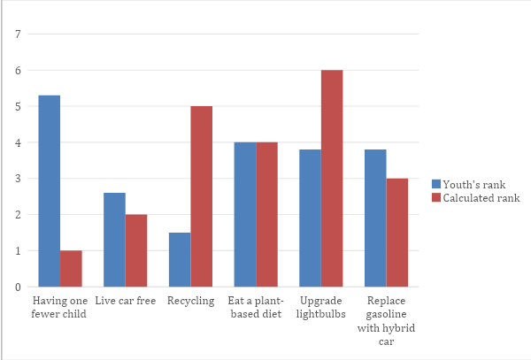

ASSESSING YOUTHS KNOWLEDGE ON THE EFFECTIVENESS OF INDIVIDUAL ACTIONS IN MITIGATING CLIMATE CHANGE
Abstract
This study aims to assess the level of knowledge among youth regarding the effectiveness of various individual actions in mitigating climate change. To achieve this, a quantitative data collection and analysis approach was employed. Data was collected through an online survey targeting youth aged 15 to 24, addressing existing knowledge gaps in this demographic. The analysis of the collected data shows that youth have a limited understanding of the effectiveness of different individual actions in contributing to climate change mitigation. Additionally, the findings indicate that social media serves as the primary source of information for young people concerning climate change. This implies that to win youth in imparting knowledge, social media is among the most powerful tools to use. Based on these findings, it is recommended that youth be actively involved in advocacy efforts related to climate change and that initiatives aimed at climate change mitigation be strengthened through targeted outreach on social media platforms.
General Introduction
Climate change is an ongoing global issue with significant social, economic, and environmental consequences. To keep global warming to 1.5°C over pre-industrial levels, the Intergovernmental Panel on Climate Change (IPCC) has emphasized the need for immediate action. According to the IPCC's research, a 1.5°C increase will result in more extreme weather events, higher sea levels, and negative effects on ecosystems, food security, and human health (IPCC, 2021). Agreements and commitments all over the world, such as the 2015 Paris Agreement, highlight the need for both group and individual efforts. Developing measures to reduce greenhouse gas emissions and submitting nationally determined contributions (NDCs) are incentivized. Academicians and policymakers also encourage more public awareness and individual actions including lowering carbon footprints by means of sustainable consumption, energy saving, and engagement in environmental projects (Stern, 2000).
Recent global projects like the Fridays for Future movement led by student activist Greta Thunberg indicate that youth play a vital role in contributing to the mitigation of climate change. Youth are more likely to embrace sustainable practices and participate in eco-friendly activities, particularly in developed countries. Though many youths are becoming more aware of the climate situation, there is growing concern that they might not completely understand how their actions could have a significant influence (O’Brien et al., 2018).
Because of its reliance on rain-fed agriculture, water shortages, and little ability for adaptation, the African continent is especially vulnerable to the consequences of climate change. With an eye towards regional collaboration, the African Union (AU) and regional organizations like the East African Community (EAC) have created climate change frameworks. Programs like the African Adaptation Initiative (AAI) demonstrate the need for local involvement and the empowerment of vulnerable groups, especially the youth, in order to tackle the climate crisis.
Climate change in Tanzania presents hazards to livelihoods, particularly in rural areas where tourism, fishing, and agriculture are dominant. The Tanzanian government has promised to include strategies for reducing and adjusting to climate change within its national development goals. Some of the objectives set in Tanzania's Nationally Determined Contribution are afforestation, sustainable land management, and the lowering of greenhouse gas emissions by renewable energy projects (URT, 2021). Despite these initiatives, citizen's knowledge and understanding of climate change and the efficacy of individual actions remains limited. Research indicates that many youth from Tanzania are somewhat aware of climate change but are not sure how their behaviors could influence global mitigating initiatives (Kangalawe & Lyimo, 2013).
Statement of the problem
The global climate crisis has raised concerns about the effectiveness of individual actions in mitigating climate change, yet youth’s awareness and knowledge on this matter remain unclear. Literature suggests that youth’s openness to embracing sustainable lifestyle make them a key demographic in driving environmental change (O'Brien & Selboe, 2015). Nonetheless, a knowledge deficit exists about their understanding of the effects of their individual actions on climate change mitigation. In numerous developing nations, like Tanzania, initiatives aimed at educating the youth about climate change frequently emphasize large-scale interventions, such as tree-planting campaigns or beach cleanups, neglecting the significance of minor, daily decisions such as energy saving, recycling, and sustainable consumerism (UNESCO, 2016). The youth may underestimate their significance in climate action due to a lack of understanding, leading to inadequate participation in personal behavioral adjustments meant to lower carbon emissions.
Moreover, despite worldwide efforts to inform the public on climate change, research indicates that young people's understanding of the issue is often limited and inadequate, especially in evaluating the impact of personal actions contribute to larger climate objectives (Leiserowitz et al., 2020). In Tanzania, where the effects of climate change are more apparent, there is a lack of empirical study about the awareness of young individuals concerning their roles in climate resilience (Mwenda, 2019). This gap pertains to the extent of youth’s knowledge concerning the efficacy of different climate change mitigation measures.
General Objective
Generally, this research was to assess the level of individual Youth Knowledge regarding the effectiveness of various individual climate change mitigation actions.
Significance of Study
The study aimed to evaluate young people's awareness of the efficacy of different individual level climate change mitigating activities, emphasizing both high-impact and low-impact solutions. The study also sought to pinpoint areas of ignorance among young people and examine the elements affecting these areas, including access to information and educational background. Additionally, the study aimed to give practical suggestions for improving climate education initiatives and provide information to guide policymakers and organizations in creating educational plans that better assist and include young people in climate mitigation efforts.
Definition of key terms
Youth
Globally, the United Nations (UN) defines youth as individuals aged between 15 and 24 years (UN, 2021). Also, the African Youth Charter categorizes youth as persons between 15 and 35 years old (African Union, 2006). In Tanzania, the National Youth Development Policy defines youth as individuals aged between 15 and 35 years, acknowledging the extended period of dependency and socio-economic challenges many young people face in the country (URT, 2007). In this study, the global view of youth was adopted as the term youth represented individuals ranging from 15-24 and was used to understand their level of awareness in action related to climate change.
Climate action
The Intergovernmental Panel on Climate Change (IPCC) defines climate action as lowering greenhouse gas emissions, switching to sustainable energy sources, and improving society adaption to climate-related hazards (IPCC, 2018). Defining climate action, according to Moser (2010), is not just a technological fix but also a change in policies and society behavior meant to adapt and lessen climatic problems. Climate action in this study will also consist of direct or indirect measures meant to help to either solve or lessen the climate crisis.
Climate change mitigation
The Intergovernmental Panel on Climate Change (IPCC) defines mitigation as human actions meant to either lower the sources of greenhouse gases or improve the sinks of GHCs (IPCC, 2014). Stern (2007) also defines climate mitigating as the global response to lower emissions by means of using low-carbon technologies, enhancing energy efficiency, and harnessing of renewable energy sources. In this study, the definition of IPCC we adopted as climate mitigation suggests any intervention, initiative, or action meant to reduce the impact associated with climate change.
Methodologies
The study used a quantitative cross-sectional research approach, selected to give a thorough awareness of youth’s knowledge on the efficacy of individual actions in mitgating climate change. This approach facilitated the collection of data at a single point in time, therefore enabling a comprehensive examination of the factors influencing climate change mitigation behaviour among the youth. The approach focused on participants aged 15 to 24, residing in Dar es Salaam, Tanzania. The region was purposefully selected due to its diverse population and status as a commercial hub, which ensured access to participants from a range of social, economic, and cultural backgrounds. This diversity was essential to capture varied perspectives on climate change mitigation behaviours.
Data collection involved an online survey to assess youths' knowledge regarding individual level climate change mitigation behaviours which was categorized based on their impact level on climate change mitigation. Participants were asked to rank these behaviours based on their perceived effectiveness in reducing climate change.
The data collected were analyzed using IBM SPSS Statistics Version 29. The analyzed data were presented in tables to describe the information and its implications. The descriptive analysis was performed to analyze the demographic by calculating the frequency and percentage of the participants' demographic. But also, the Chi-squared test was performed to identify statistically significant differences in knowledge levels based on socio-demographic characteristics, and beliefs Pickering et al. (2020). Additionally, one-way ANOVA tests explored correlations between participants’ knowledge scores and their reported sources of information on climate change.
Results and discussion
Demographic characteristics
The gender distribution data indicates that males constitute 63.3% (190 participants) of the sample, and females represent 36.7% (110 participants). This signifies a notable gender disparity, which may affect the study's conclusions, particularly if the research addresses subjects where gender is essential, such as engagement in economic activities or social behaviors. The underrepresentation of females may indicate prevailing gender disparities within the community or may be a consequence of sample selection procedures.
The age distribution of the sample is primarily comprised of persons aged 15-19 years, representing 60% of the participants (180 participants). Forty percent (120 participants) are in the 20-24 age category. The predominance of younger participants may influence the conclusions, especially in studies related to education, work, or health, as younger individuals may possess distinct viewpoints and experiences relative to their older counterparts. The majority of the sample, 39.3% (118 participants), has attained primary schooling. Secondary education is the second most prevalent level, including 29% (87 participants), but a lesser proportion of participants (8.7%, or 26 participants) have achieved university-level education. Twenty-three percent (69 participants) lack formal schooling. This educational distribution may reflect the broader access to education in the community and could influence several socio-economic variables, including employment, income creation, and resource accessibility. The comparatively low proportion of individuals with higher education may also influence the ability to make educated decisions in domains such as climate change mitigation, civic engagement, or economic empowerment.
This study investigated youths' understanding of the efficacy of individual efforts in alleviating climate change. We posed two research questions about the accuracy of teenagers' understanding of the efficacy of individual activities in alleviating climate change and the factors that affect their knowledge of these actions' effectiveness.
Three hundred youths from the Dar es Salaam region of Tanzania participated in a 10-minute survey designed to evaluate their understanding of the efficacy of various individual actions in combating climate change, as well as the factors influencing their knowledge on this subject. The ages of participants varied from 15 to 24 years. Approximately 51.7% of the participants were female, and over 37.3% possessed a primary education level.
| Characteristics | Frequency | |
|---|---|---|
| Number | Proportion of Sample (%) | |
| Gender | ||
| Male | 190 | 63.3 |
| Female | 110 | 36.7 |
| Age Group | ||
| 15 - 19 | 180 | 60.0 |
| 20 - 24 | 120 | 40.0 |
| Education Level | ||
| No Formal Education | 69 | 23.0 |
| Primary Education | 118 | 39.3 |
| Secondary Education | 87 | 29.0 |
| University | 26 | 8.7 |
Level of Knowledge about individual actions that could mitigate climate change
This was addressed by looking at how the respondents were aware of the effectiveness of their actions which could contribute to climate mitigation. Respondents were given six actions that individuals could personally take to help lessen Climate Change and were asked to rank them (from 1-6) according to their perceived effectiveness in reducing greenhouse gas emissions, from the highest rank to the lowest. The data showed that youths ranked recycling as the most effective (mean rank of 1.5) this was followed by living car-free (mean rank of 2.6), replacing gasoline cars with hybrid cars (mean rank of 3.8), upgrading light bulbs (mean rank of 3.8), Eat a plant-based diet (mean rank of 4.0) and the least effective action was considered to be having one free child (mean rank of 5.3). (Figure 1).

Figure 1: Youth ranking of the efficacy of actions in reducing GGE compared to actual ranks (based on calculations of study by Wynes et al (Wynes & Nicholas, 2017).
We then used Wilcoxon signed rank tests to determine if there are significant differences in how youth rank the impact of various individual actions compared to established rankings of Wynes et al (5). The test demonstrated statistically significant variations on how youths ranked these behaviors in comparison to the calculated rankings derived from a study by of Wynes et al (5). Youths rated recycling" (Z = -15.5 p < 0.0001) to be the most impactful, this was followed by living car free (Z = -9.2 p < 0.0001), replacing gasoline cars with hybrid cars ((Z = -2.4 p < 0.017), upgrading light bulbs (Z = -14.1 p < 0.0001), Eat a plant-based diet (Z = 10.4 p < 0.0001) and the least effective action was considered to be having one free child (Z = -15.4 p < 0.0001) This may be because of the truth that most of the climate activist they most talk about the issue of recycling. But also, most of the intervention proceeding in the local community is the issue of recycling and forgetting to speak about other behaviors that are most contributing to climate change mitigation. This data implies the existing gap in awareness regarding the actions contributing to climate change. This was supported by (Ivanaj, 2024) explain the increase in publicly available information about the causes and consequences of climate change, as well as about actions to be taken to mitigate it, has an important positive influence on public problem awareness. This in turn positively influences both personal efficacy and public behavioral intentions to fight climate change, two key mediators that spur positive changes in desired climate-friendly public behaviors according to (Wolf & Moser, 2019) the review highlights great variation and sometimes a direct contradiction of view. This calls for attention regarding knowledge of public understanding and engagement.
From this study youths with personal experiences of climate-related events possessed significantly greater knowledge of the effectiveness of individual climate change mitigation actions compared to those without such experiences. These findings indicate that personal experiences with climate-related events such as floods, droughts, or extreme weather conditions often serve as powerful motivators for individuals to seek more information about climate change and its mitigation(Sambrook et al., 2021). Those who have lived through climate-related events are more likely to engage in discussions, educational programs, and community initiatives focused on climate change(Sambrook et al., 2021). These findings align with existing literature where Spence et al found that individuals who had experienced flooding had a significantly higher awareness and concern about climate change(Spence et al., 2011). Personal experiences with flooding /droughts tend to provide survivors with opportunities to learn about effective climate change mitigation and adaptation strategies and their potential impact(Demski et al., 2017). Education programs should incorporate personal stories and case studies of individuals who have experienced climate-related events. As Ardoin et al. pointed out in their analysis of environmental education programs, storytelling, especially involving real-life experiences, increased student engagement and retention of information(Ardoin et al., 2020).
Factors of the effectiveness of individual actions that could mitigate climate change
Regarding demographic factors, the effectiveness knowledge score (EKS) was not found to show statistically significant variation among gender (p = 0.093) or age groups (p = 0.650). However, statistically significant differences were observed among different educational levels (p = 0.015, where participants having university education levels demonstrated lower EKS (mean = 1.9) compared to those with no education, primary education levels, and secondary education (mean EKS was 2.4. 2.3 and 2.2, respectively). We also determined that the effectiveness knowledge score (EKS) showed significant variation among those with participation in different environmental activities (p= 0.015) where those who have participated in different environmental activities demonstrated lower EKS (mean 2.0) compared to those who had not participated in different environmental activities (mean 2.4).
In addition, the effectiveness knowledge score (EKS) showed significant variation among those with personal experiences with climate-related events whereas those with personal experiences with climate-related events demonstrated lower EKS (mean 2.1) compared to those who had no personal experiences with climate-related events (mean 2.3). The effectiveness knowledge score (EKS) also showed significant variation (p-value = 0.000) among those who believed that they were at risk of climate change-related events (mean 2.0) and those who perceived they were at no risk (mean 2.3). We also asked participants whether they believe individual actions or lifestyle choices can help mitigate climate change. A majority of youth (83.7%) responded that they did believe their actions or lifestyle choices could help in the mitigation of climate change. Those who didn’t believe in the effectiveness of their actions were asked to provide reasons for their disbelief. Majority attributed their skepticism to external factors such as placing responsibility for pollution on large companies and corporations. Additionally, some expressed a feeling of helplessness to take responsibility stating reasons like "I don’t see others doing it, so why should I?" or “Changing habits is very challenging." Some respondents displayed a lack of awareness about climate change with comments such as "Climate change follows a natural cycle beyond human control" or "I don't fully understand how individual actions impact climate change". In general, responses indicated that participants could be categorized as belonging to one of two groups—those who generally perceived that their actions couldn't make a difference and finally those who lacked awareness on climate change, its causes, and mitigation actions. (Figure 2).
Figure 2: Negative Responders and representative comment
The study's conclusions highlight the necessity for customized educational and awareness programs that address the inadequate understanding prevalent across various demographic groups. Although a significant majority of youth (83.7%) believe in the efficacy of individual measures to combat climate change, many have doubts stemming from perceived external influences or feelings of impotence. This indicates that educating citizens about climate change by itself is not enough. There is a need for the implementation of effective communication tactics to empower and get them engaged. To overcome barriers, such as the belief that largely affects changing personnel must focus on community-driven approaches that illustrate the tangible impacts of collective individual actions. By bridging information gaps and developing a sense of urgency, these initiatives could improve public comprehension of climate change and encourage active involvement in mitigation solutions.
The study found that youths with personal experiences of climate-related events had much stronger understanding of the efficacy of individual climate change mitigation activities than those without such experiences. This finding suggest that personal encounters with climate related disasters, whether floods, droughts, or other severe weather occurrences, frequently act as motivators for individuals to seek further information regarding climate change and its mitigation (Sambrook et al., 2021). Individuals who have experienced climate-related disasters are more inclined to engage in conversations, educational programs, and community initiatives centered on climate change (Sambrook et al., 2021). These findings correspond with current literature, as Spence et al. discovered that people who experienced flooding notably had greater awareness and concern over climate change (Spence et al., 2011). Survivors of flooding and drought often get insights about successful climate change mitigation and adaptation techniques and their potential effects (Demski et al., 2017). Educational programs ought to integrate personal narratives and case studies of individuals who have encountered climate related occurrences. Ardoin et al. highlighted in their examination of environmental education programs that storytelling, particularly with real-life events, enhanced student engagement and information retention (Ardoin et al., 2020).
The research also emphasized the need of education in promoting climate awareness. Individuals possessing higher educational attainment, especially those with university degrees, had a superior comprehension of acts with significant impact, as shown by lower effectiveness knowledge scores (EKS) relative to individuals with lesser educational qualifications. This indicates that increased exposure to scientific knowledge, particularly among individuals with university education, equips youth with a more thorough comprehension of environmental challenges. Youth with advanced education, such as university degrees, are more likely to engage in conversations regarding the implications of population dynamics, energy consumption, and sustainable practices, topics that may not be extensively addressed in lower educational levels (Wang et al., 2022). A study investigating public perceptions of climate change in 119 countries revealed that education accurately predicts climate change knowledge, with individuals possessing higher education levels demonstrating a greater comprehension of the causes of climate change and various mitigation strategies (Feinstein & Mach, 2020).
It is important to note that in most African nations, just 23% to 33% of the students finish secondary education, and the present gross university enrollment ratio is at merely 9.4% (Dispatch & Richard, 2024). Therefore, it is essential to incorporate extensive climate education at all educational levels. This approach can overcome the knowledge gap and guarantee that all people, irrespective of their educational background, possess a fundamental understanding of the most efficient measures to address climate change. This will empower youth to make more informed decisions and have a stronger collective influence on mitigating greenhouse gas emissions. It is essential to remember that nearly 11% of youth in Tanzania lack formal education (Profile, 2018), and our study indicated that these youths were uninformed about the efficacy of climate mitigation behaviors, as evidenced by their elevated effectiveness knowledge score (EKS). Consequently, authorities must identify effective strategies to engage this demographic of young people. Excluding them due to their absence from school would be a considerable error, as they represent a vital segment of the Tanzanian youth community.
Furthermore, the study pointed out that people engaged in various environmental activities have superior knowledge regarding the relative efficacy of specific climate change mitigation measures compared to those who do not participate. This study indicates that more participation among youth in activities targeting environmental challenges correlates with enhanced understanding of influential behaviors and actions. Our findings align with the prior research done by Ardoin et al., which indicated that students engaging in outdoor environmental programs exhibited a greater environmental understanding and pro-environmental behaviors relative to their non-participating counterparts (Ardoin et al., 2020). This shows the importance of active engagement in improving awareness of climate challenges. Participation in environmental activities frequently consists of educational resources, workshops, and debates that enhance understanding of the causes and effects of climate change. This hints at the necessity of utilizing education to foster climate change and mitigation awareness by encouraging engagement at all levels of the community. A study by Akrofi et al. indicates that to attain effective climate change action, it is crucial to increase youth’s participation in climate change initiatives (Akrofi et al., 2019).
Source of knowledge about climate change
The study also aims to understand youth’s source of knowledge on climate change. The respondents were asked to select their source of knowledge. The data presents the participants’ responses, revealing distinct differences in the frequency of responses. Social media is the most significant source, with 90 respondents indicating it as their primary means of obtaining information. Subsequently, the internet garnered 63 responses, while mass media attracted 53. Family and friends contributed 47 responses, local community contributed 31, and government agencies accounted for only 17 as presented in the figure below. These data show that most youth rely on digital platforms, particularly social media, for information regarding climate change.
This data implies that there is value in utilizing social media and online platforms to disseminate information on climate change effectively. Since youth are highly engaged with these sources, educational initiatives and awareness campaigns can be more impactful if conducted through these channels. This trend also indicates a potential gap in the effectiveness of traditional information sources, such as government agencies and local communities, suggesting a need for these entities to adapt their strategies to better engage youth.

This indicates that youth lack the knowledge of the actual effectiveness of different individual climate change mitigation actions. Such a knowledge gap has also been documented in a study by Pickering et al his study involved 17-18years old Canadian youths where impact behaviors such as recycling and reducing waste were overestimated as highly impactful behaviors(Pickering et al., 2020) and from a study by Truelove and Gillis where participants consistently ranked recycling higher than scientifically supported high-impact actions(Truelove & Parks, 2012). This overestimation can be explained by the fact that recycling is one of the most visible and easily accessible actions and is more encouraged through public campaigns, community programs, and educational efforts, which tend to create a perception of them being a highly effective action. It should also be noted that actions such as recycling and upgrading light bulbs are actions that youths can exert significant control. Other actions such as eating a plant-based diet and living car-free require more resources and autonomy within family environments(Pickering et al., 2020).
Moreover, participants in this study ranked having fewer children as least effective, a finding that contrasts sharply with the calculated ranks proposed by the study of Wynes et al which ranked it as the most impactful behaviors(Wynes & Nicholas, 2017). This shows that youths are not fully aware of the significant impact that population growth has on greenhouse gas emissions. According to of Wynes et al study, having one fewer child can achieve emissions reductions equivalent to those made by 684 teenagers adopting lifelong comprehensive recycling habits(Wynes & Nicholas, 2017). Similar findings were reported in a study done by Pickering et al where Canadian youth ranked having fewer than one child as the least effective action(Pickering et al., 2020). Such misunderstandings stem from the fact that while actions such as recycling are often promoted in environmental campaigns, the link between family planning and climate change is highlighted less frequently, particularly in youth-targeted education(Götmark & Andersson, 2020). Additionally, in African societies, such as those in Tanzania, the decision to have children is deeply embedded in traditions, cultural expectations, and economic considerations, making the concept of having fewer children less likely to be considered or prioritized by individuals(Maning et al., 2024). In Tanzania, where the population is projected to double every 23 years, climate change mitigation conversations should be broadened to include discussions on the long-term implications of increased population growth on carbon emissions(‘TANZANIA: Economic Update’, 2021). Opting to have one fewer child, as noted by Wynes et al., can achieve emissions reductions similar to those made by 684 teenagers adopting lifelong comprehensive recycling habits(Wynes & Nicholas, 2017). The impact of this choice is significant due to the cumulative reduction in emissions across future generations, as highlighted in life cycle assessments by Murtaugh and Schlax(Murtaugh & Schlax, 2009).
The correlation of climate change action and Knowledge Awareness
Figure 3: Source of Information on Climate Change.
We also performed a series of one-way ANOVA tests to explore potential correlations between different sources of information about climate change, as reported by respondents and their effectiveness knowledge score (EKS). However, all tests resulted in non-significant results (p > 0.05). This suggests that no statistically significant associations were observed between any specific information source and participants' EKS in this study. We also performed logistic regression to identify independent factors associated with youth’s knowledge of the effectiveness of individual actions in mitigating climate change. Independent factors that were found to be associated with youth’s knowledge with 95% CI were; participation in environmental activities (adjusted odds ratio of 3.6(1.9-6.7 and p = 0.000) Perceived risk of climate change-related hazards (adjusted odds ratio of 4.90(2.25-10.68) and p= 0.000) and Personal experiences with climate change related hazards (adjusted odds ratio of 2.17(1.11 4.22) and p= 0.023).
Table 2: Logistic regression analysis for factors associated with youth’s knowledge on the effectiveness of individual actions in mitigating climate change
| Factor | Bivariate analysis | Multivariate analysis | ||
|---|---|---|---|---|
| cOR (95% CI) | P value | aOR (95% CI) | P value | |
| Education level | ||||
| No education | 1.95 (0.68-5.61) | 0.215 | 0.50 (0.16-1.50) | 0.213 |
| Primary | 2.56 (0.95-6.91) | 0.063 | 0.32 (0.11-0.93) | 0.036 |
| Secondary | 1.944 (0.70-5.4) | 0.200 | 0.50 (0.17-1.5) | 0.221 |
| University | Ref | |||
| Participate in environmental activities | ||||
| No | 0.27 (0.15-0.48) | 0.000 | 3.6 (1.9-6.7) | 0.000 |
| Yes | Ref | |||
| Perceived risk of climate change related hazards | ||||
| No | 0.22 (0.11-0.47) | 0.000 | 4.90 (2.25-10.68) | 0.000 |
| Yes | Ref | |||
| Personal experiences with climate change related hazards | ||||
| No | 0.44 (0.24-0.82) | 0.01 | 2.17 (1.11-4.22) | 0.023 |
| Yes | Ref | |||
| cOR: crude odds ratio, aOR: adjusted odds ratio, Ref: reference value, CI: confidence interval | ||||
In this study, we aimed to explore youth’s knowledge of the effectiveness of individual actions for mitigating climate change. First, we assessed the knowledge of the relative effectiveness of different individual climate mitigation actions. Second, we looked into what factors were associated with youth’s knowledge of the relative effectiveness of different individual climate mitigation actions. Our findings showed that youth overestimated the effectiveness of low impact behaviors while underestimating the effectiveness of the high-impact behaviors.
Additionally, our study aligned with a study done by Pickering et al., highlighting that obtaining information from different sources had no association with knowledge of the effectiveness of individual climate change mitigation actions (Pickering et al., 2020). This can be attributed to the fact that various sources, like the internet, social media, or mass media, convey similar messages regarding climate change mitigation, eventually leading to a uniform level of knowledge among participants regardless of the particular sources(Adetayo et al., 2023). It should also be pointed out that the effectiveness of information in enhancing knowledge may depend more on its quality and depth rather than the medium in which it is distributed. (Adetayo et al., 2023). That is to say, brief news headlines or social media posts may raise awareness but lack the depth necessary to substantially enhance the audience's knowledge. To enrich public understanding towards climate change mitigation, it is important to incorporate diverse perspectives and approaches in educational and communication strategies.
Our study also found no significant difference in the knowledge of the effectiveness of individual climate change mitigation actions between individuals who believe their actions or lifestyle choices can contribute to reducing climate change and their fellow counterparts who do not. Similar findings were obtained from a study done by Pickering et al. (2020), where knowledge showed no significant variation in youth’s beliefs on whether their actions or lifestyle choices can contribute to reducing climate change. This hints at a general lack of awareness or understanding about specific actions that can effectively mitigate climate change among both groups. This suggests that individuals, regardless of belief, may not have access to detailed information on the effectiveness of different actions. Efforts should be made to address the gap between beliefs and knowledge. This involves creating educational content that resonates with individuals' values and beliefs while providing clear, actionable information about climate change mitigation.
Furthermore, the study found that factors such as participation in environmental activities, perceived risk of climate change-related hazards, and personal experiences with climate change-related hazards were found to be associated with youth’s knowledge of the effectiveness of individual climate mitigation actions. Empirical evidence from numerous studies supports these findings, highlighting that engagement in environmental activities fosters hands-on learning and exposure to climate knowledge, enhancing awareness of impactful actions(Croak & Walker, 2024). Moreover, youth who perceive a high risk of climate change are more motivated to learn about mitigation strategies, reinforcing the idea that perceived personal relevance drives knowledge acquisition(Croak & Walker, 2024). Finally, personal experiences with climate-related events, such as flooding, landslides, or droughts, further amplify this understanding by making the consequences of climate change tangible and urgent, prompting a deeper understanding of effective mitigation actions(Spence et al., 2011).
Conclusion
In conclusion, while activities with little impact—like recycling and upgrading light bulbs— are overestimated, those with great impact—like having less than one kid, following a plant based diet, and living without a car—are underestimated. These findings emphasize the need for education, involvement in environmental initiatives, and personal experiences with climatic events. Future research could use mixed-methods and strategies combining surveys with qualitative interviews or focus groups to get closer to the factors influencing young people's perspective on the effectiveness of individual actions in lessening climate change.
This study, however, has its shortcomings, including the fact that it was conducted using online surveys, excluding young people without internet access, which are a sizeable portion of our population. Future studies could be community-based, in which all youth will be included. Additionally, the survey did not include youth from the rural parts of Tanzania. Future studies could thus incorporate a more geographically varied sample, including urban and rural locations, promoting better awareness among youth in various socioeconomic and cultural environments. Comparative studies across many other countries and regions can also serve to highlight various regional difficulties and opportunities for effective climate change education and policy intervention.
References
Adetayo, A. J., Oke, A. M., Babarinde, O. A., & Adeleke, O. A. (2023). Information sources and
climate change mitigation support. Information Impact: Journal of Information and Knowledge
Management, 14(1), 22–39.
Available here
African Union (2006). African Youth Charter. Addis Ababa: African Union.
Akrofi, M. M., Antwi, S. H., & Gumbo, J. R. (2019). Students in climate action: A study of some
influential factors and implications of knowledge gaps in Africa. Environments - MDPI, 6(2).
Available here
Ardoin, N. M., Bowers, A. W., & Gaillard, E. (2020). Environmental education outcomes for
conservation: A systematic review. Biological Conservation, 241, 108224.
Available here
Croak, A., & Walker, G. J. (2024). Hands-on climate engagement: Principles for effective
hands-on activities and demonstrations. Journal of Science Communication, 23(3), 1–18.
Available here
Demski, C., Capstick, S., Pidgeon, N., Sposato, R. G., & Spence, A. (2017). Experience of
extreme weather affects climate change mitigation and adaptation responses. Climatic Change,
140(2), 149–164. Available here
Dispatch, A., & Richard, N. (2024). Assessing the gaps: Africans look for greater progress on
education. 768, 1–26.
Feinstein, N. W., & Mach, K. J. (2020). Three roles for education in climate change adaptation.
Climate Policy. Available here
Götmark, F., & Andersson, M. (2020). Human fertility in relation to education, economy,
religion, contraception, and family planning programs. BMC Public Health, 20(1), 1–17.
Available here
Hansen, J., Sato, M., Ruedy, R., Schmidt, G. A., Lo, K., & Persin, A. (2013). Climate
sensitivity, sea level, and atmospheric carbon dioxide. Philosophical Transactions of the Royal
Society A: Mathematical, Physical and Engineering Sciences, 371(2001), 20120294.
Intergovernmental Panel on Climate Change (IPCC). (2018). Global Warming of 1.5°C. IPCC Special
Report.
IPCC. (2014). Climate Change 2014: Mitigation of Climate Change. Contribution of Working Group
III to the Fifth Assessment Report of the Intergovernmental Panel on Climate Change. Cambridge
University Press.
IPCC. (2021). Climate Change 2021: The Physical Science Basis. Contribution of Working Group I
to the Sixth Assessment Report of the Intergovernmental Panel on Climate Change.
Ivanaj, S. (2024). Public information as a catalyst for individual-level behavior to mitigate
climate change. Journal of Cleaner Production, 434, 140029.
Available here
Kangalawe, R. Y. M., & Lyimo, J. G. (2013). Climate Change, Adaptive Strategies and Rural
Livelihoods in Semi-Arid Tanzania. Natural Resources, 4(3), 266-278.
Leiserowitz, A., et al. (2020). Climate Change in the American Mind. Yale Program on Climate
Change Communication.
Maning, M. J., Haule, K., & Kabigi, B. (2024). Low Usage of Modern Contraceptives Among Women of
Reproductive Age in Tanzania: Analysis Beyond Availability and Awareness Factors. 31(1), 21–40.
Moser, S. C. (2010). Communicating climate change: History, challenges, process, and future
directions. Wiley Interdisciplinary Reviews: Climate Change
Murtaugh, P. A., & Schlax, M. G. (2009). Reproduction and the carbon legacies of individuals.
Global Environmental Change, 19(1), 14–20. Available here
Mwenda, P. (2019). Climate Change Awareness and Perception among Tanzanian Youth. University of
Dar es Salaam.
O’Brien, K., Selboe, E., & Hayward, B. M. (2018). Exploring Youth Activism on Climate Change:
Dutiful, Disruptive, and Dangerous Dissent. Ecology and Society, 23(3), 42.
O'Brien, K., & Selboe, E. (2015). Climate Change and Development: The Role of Young People in
Driving Global Action. University of Oslo.
Pickering, G. J., Schoen, K., Botta, M., & Fazio, X. (2020). Exploration of youth knowledge and
perceptions of individual-level climate mitigation action. Environmental Research Letters,
15(10). Available here
Profile, N. E. (2018). School Entrance Age: Duration and Official Ages for School Cycle:
Academic Calendar.
Salvador Costa, M. J., Leitão, A., Silva, R., Monteiro, V., & Melo, P. (2022). Climate Change
Prevention through Community Actions and Empowerment: A Scoping Review. International Journal of
Environmental Research and Public Health, 19(22). Available here
Sambrook, K., Konstantinidis, E., Russell, S., & Okan, Y. (2021). The Role of Personal
Experience and Prior Beliefs in Shaping Climate Change Perceptions: A Narrative Review.
Frontiers in Psychology, 12, 669911. Available here
Spence, A., Poortinga, W., Butler, C., & Pidgeon, N. F. (2011). Perceptions of Climate Change
and Willingness to Save Energy Related to Flood Experience. Nature Climate Change, 1.
Available here
Stern, P. C. (2000). Toward a Coherent Theory of Environmentally Significant Behavior. Journal
of Social Issues, 56(3), 407–424.
TANZANIA: Economic Update. (2021). Africa Research Bulletin: Economic, Financial and Technical
Series. Available here
Truelove, H. B., & Parks, C. (2012). Perceptions of behaviors that cause and mitigate global
warming and intentions to perform these behaviors. Journal of Environmental Psychology, 32(3),
246–259. Available here
UNESCO. (2016). Education for Sustainable Development: Climate Change Education for Sustainable
Development. Paris: UNESCO.
United Nations (2021). Youth. United Nations Department of Economic and Social Affairs.
United Republic of Tanzania (URT) (2007). National Youth Development Policy. Dar es Salaam:
Ministry of Labour, Employment and Youth Development
Wang, Q., Niu, G., Gan, X., & Cai, Q. (2022). Green returns to education: Does education affect
pro-environmental attitudes and behaviors in China? PloS One, 17(2), e0263383.
Available here
Wolf, J., & Moser, S. C. (2019). Individual understandings, perceptions, and engagement with
climate change: Insights from in-depth studies across the world. WIREs Climate Change, 2(4),
547–569. Available here
Wynes, S., & Nicholas, K. A. (2017). The climate mitigation gap: Education and government
recommendations miss the most effective individual actions. Environmental Research Letters.
Available here